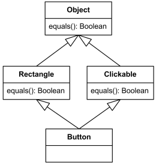

These concepts are additional knowledge that goes beyond the basics, and allows for greater specification of your class modeling.
Generalization is used to simplify a class into specific classes. For example, students can have the specific classes undergraduate and graduate. When thinking of a generalization you can think of the relationship between the specific class(es) and the class as an “is-a” relationship (i.e. undergraduate is a student). A specific class is known as a subclass while the class it is derived from is called a superclass.
When drawing a generalization you indicate it with an open arrow pointing to the superclass, with branches connecting to the subclasses as seen in the figure to the right. You can also make it so each subclass has its own open arrow. It is common practice to place the subclasses below the superclass to show that the superclass is higher up in the hierarchy.
The subclasses inherit attributes and operations from its superclass. For example, in the generalization figure, undergraduate and graduate will also have the attributes studentID, name, and major along with the attributes in their individual classes. Because of this, generalization is also known as inheritance.
A subclass not only can inherit from one superclass, but from more than one. An example of this can be seen below.
However this may get confusing because two or more superclasses may have similar attribute or operation names that are not equally defined. This problem can be seen in the diagram below, which is also known as diamond problem. In this diagram the operation equals() is used in more than one of the inherited superclasses.
As a last note, try to avoid overgeneralizing. For example, just because Student and Teacher have a name and gender, doesn’t mean you should generalize them into a Person superclass. You should only do this if Person has conceptual value. Also, if you are worrying about whether or not your generalization is valid, remember that subclass objects may be used everywhere superclass objects occur, but not the other way around. For example, when you use a Person object you may replace it with a Student or Teacher object, but not vice-versa.
An abstract class is a superclass that cannot be instantiated. Only subclasses of that superclass can be instantiated. Like non-abstract classes, otherwise known as concrete classes, abstract classes can contain attributes and methods.
In the UML Class Diagram, abstract base classes are represented with class names in italics.
When class modeling, constraints is an important concept to understand. In essence, constraints are restrictions on an object or a set of objects. A simple constraint to understand is a specific required value of an attribute. Imagine a class called, Employee, containing the following attributes: employeeID, hireDate, basePay, workStatus. A constraint that could be applied to this class is a required value for an employeeID. A more complicated constraint could be an Employee with a hireDate less a specific date stamp, must fulfill a timeSheet weekly.
A set of attributes and methods that represent a “behaves-like” relationship. When visualizing a system, the interface acts as a contract for a specific behavior. In UML, interface are italicized and is generally placed on the right of a class. In addition, an interface is generally indicated with a different color and is displayed as: <<interface>>.